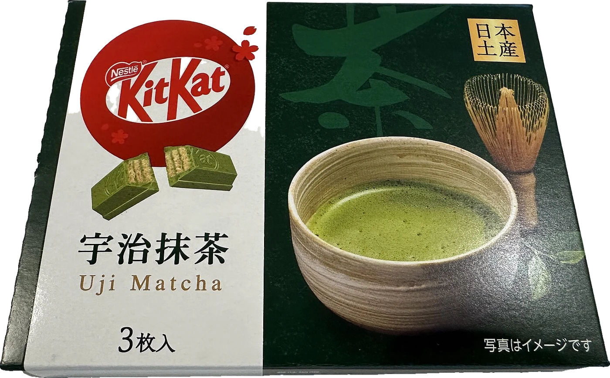
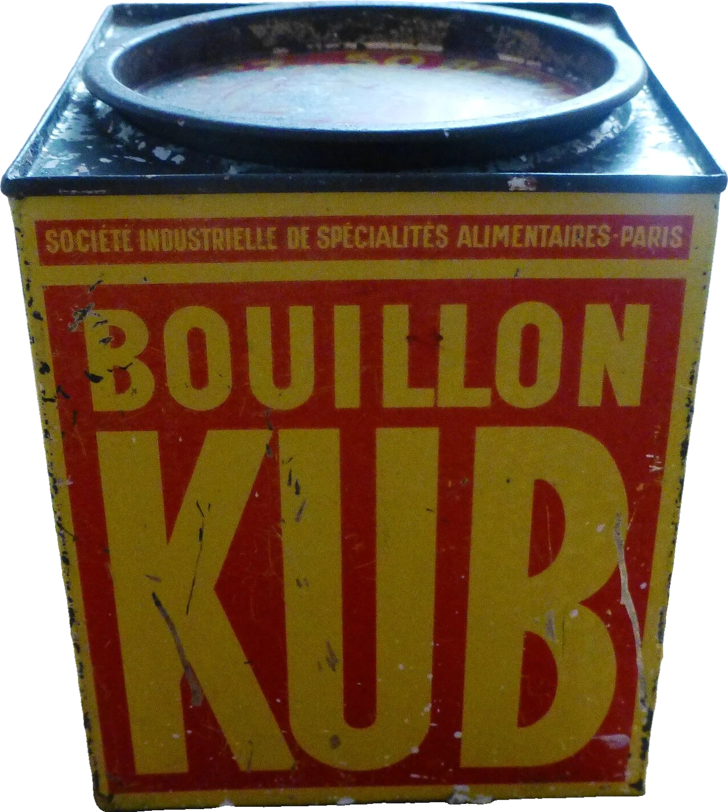

Paris
Tokyo 東京
Nestlé: France × Japan
Two Markets. One Global Group.
Three brands. Two markets.
A closer look at how global brands connect with local consumers.
France The classic four-finger bar sits at the heart of the range.
Japan Regional and seasonal flavours, and a good-luck gift: “Kitto Katsu”.
France Coffee with milk at breakfast, capsule machines at home.
Japan Gold Blend, home coffee machines and coffee on the go.
France Stock cubes for soups and slow-cooked classics.
Japan Maggi Bouillon, a Western-style stock for home cooking.


KitKat: beyond the classic break.
France
Japan 日本




The classic break
Four milk-chocolate wafer fingers: the bar at the heart of the French range.
Flavours made to gift
Uji Matcha, Sakura Matcha and regional editions. Students receive it for luck: “Kitto Katsu”, you will surely win.


Nescafé: different habits. One coffee brand.
France
Japan 日本


Breakfast, then the machine
Coffee with milk to start the day, and Dolce Gusto capsules for the home.


At home and on the go
Gold Blend instant and home machines, plus ready-to-drink coffee from vending machines.


Maggi: local taste. Global brand.
France
Japan 日本
Stock for slow classics
Cubes such as Kub have flavoured French soups and pot-au-feu for generations.
Pictured: historic Maggi France tins.

マギー ブイヨンMaggi Bouillon
A Western stock, a Japanese table
Nestlé Japan sells Maggi Bouillon for dishes like potofu. Maggi reached Japanese hotel kitchens in 1927.
No verified photo of the Japanese pack was available, so none is shown.





Think globally.Adapt locally.
Global brand strength comes from understanding local consumers.